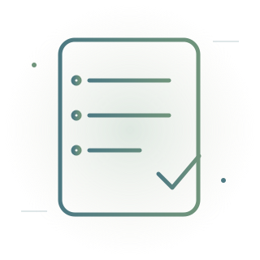

08 - ПРОВЕРЬ СЕБЯ
Мини-тест
по цифровой безопасности
10 случайных вопросов из базы. За правильный ответ - 10 баллов. Ответы перемешиваются при каждом прохождении.

МИНИ-ТЕСТ · ЦИФРОВАЯ ГРАМОТНОСТЬ10 вопросов.
10 вопросов.
Один внимательный ты.
Вопросы выбираются случайно из базы. Прочитай объяснения после каждого ответа и закрепи полезные привычки.